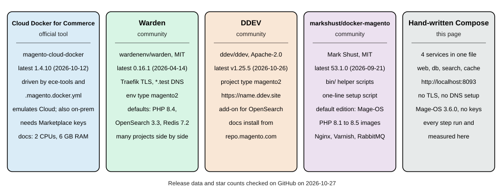
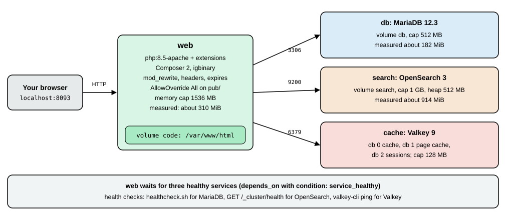

Local Development Environments
|
This content was generated with the assistance of AI and should be verified against the official documentation before being relied on in production. |
A Magento store is five services and a PHP application, and a local environment is the cheapest way to get all of them running together, so you can write modules, test upgrades and rehearse deployments without touching a real server. This page compares the ways to do it for Magento 2.4.9 and Mage-OS 3.6.0 (2026-10-14), checked on 2026-10-27, and walks through one of them from an empty directory to a working store with real commands and measured resource use. The steps of the install itself are described in Installation; the settings that make a store a good laptop citizen (developer mode, 2FA, cache types) are in Settings for development below; the first Admin steps are in Admin and Store Setup. The page applies to Magento Open Source, Mage-OS and Adobe Commerce on premises or on cloud infrastructure; Adobe Commerce as a Cloud Service is run by Adobe and has no local install.
There is one official tool: Cloud Docker for Commerce (the magento/magento-cloud-docker package), which the
Adobe documentation describes as "a Magento Community Engineering project supported by the Magento developer
community". It emulates the Adobe Commerce on cloud infrastructure environment and can also be used for on-premises
projects. Warden, DDEV and markshust/docker-magento are independent community projects; Adobe’s developer
documentation does not mention them, and each is labelled as community-maintained below. A fifth option is a Docker
Compose file you write yourself, which is what the walkthrough uses, because it needs no key from the Commerce
Marketplace and shows every moving part.

What a local environment has to provide
-
PHP 8.5 (or 8.4 while you upgrade; Mage-OS 3.6.0 also accepts 8.3) with the extensions in Installation,
memory_limitof 2G, OPcache withopcache.save_comments=Onand a realpath cache. -
A database: MariaDB 12.3 or MySQL 8.4. MariaDB 11.8 also ran in the tests.
-
OpenSearch 3, with about 1 GB of memory for a single node.
-
Valkey 9 for cache, page cache and sessions (2.4.9 does not list Redis; Redis 7.2 is listed only for 2.4.4).
-
A web server on a port you can reach, and ideally a hostname and TLS certificate, because the checkout and some payment integrations refuse plain HTTP outside
localhost. -
Cron and queue consumers when you work on indexing, emails or asynchronous APIs; otherwise you reindex by hand.
-
A mail catcher (Cloud Docker for Commerce includes MailHog) and Xdebug for step debugging.
-
Fast file access from your editor to the code. On macOS and Windows a Docker bind mount of a Magento tree (hundreds of thousands of small files) is the usual bottleneck, which is why the tools offer Mutagen, a named volume or copy-based synchronisation.
A reasonable machine has 6 GB of memory for Docker, two CPUs and an SSD. Adobe’s Cloud Docker guide asks for 2 CPUs, 6 GB of memory and 1 GB of swap; the markshust README asks for at least 6 GB of RAM allocated to Docker, a dual-core CPU and an SSD; Warden’s installation page warns that Docker Desktop’s default of 2 GB of memory causes heavy swapping, killed processes and very high CPU use during some Magento actions. The stack in the walkthrough below used about 1.4 GiB at rest after an install, which fits those numbers.
Comparison
| Tool | Maintainer and licence | Latest release (2026-10-27) | How it reaches the store | How Magento is installed |
|---|---|---|---|---|
Cloud Docker for Commerce ( |
Magento Community Engineering, supported by the community; OSL-3.0 |
1.4.10 (2026-10-12); earlier 1.4.9 (2026-07-20), 1.4.8 (2026-05-06), 1.4.7 (2026-03-06) |
Port 80 on the host and the default hostname |
|
Warden ( |
Community; MIT |
0.16.1 (2026-04-14) |
Traefik with Warden-issued certificates and Dnsmasq for |
|
DDEV ( |
DDEV project; Apache-2.0 |
v1.25.5 (2026-10-26) |
|
|
markshust/docker-magento |
Mark Shust; MIT |
53.1.0 (2026-09-21) |
|
|
Hand-written Compose (this page) |
You |
Compose v5.6.1, images pinned by tag |
|
Release data and licences were read from GitHub on 2026-10-27. All four named tools are active: each repository received a push within the previous six weeks, the newest on the day of the check. What each pins by default matters more than its age: Warden’s template for Magento 2 pins PHP 8.4 and Redis 7.2, and Cloud Docker for Commerce’s guide lists services only up to PHP 8.4 (see below), so check versions against the 2.4.9 table before an install.
Source: Adobe: Cloud Docker for Commerce
Cloud Docker for Commerce, the official tool
Cloud Docker for Commerce generates a docker-compose.yml from the services your project declares and starts it. It is
meant to mirror the Cloud integration environment: the same build, deploy and post-deploy steps run in containers
(build, deploy, cron, optional node) in front of the service containers. Its documented features are
cross-platform support (Linux, macOS and Windows with WSL2), a Cloud-like deployment pipeline and file system, a local
development environment for on-premises projects, three file synchronisation modes (native, mutagen and
manual-native, the last of which "provides the best performance on macOS and Windows"), and extension through a
standard Docker Compose override.
Prerequisites: Docker, Git, Mutagen for developer mode on macOS, and optionally PHP and Composer on the host (the
init-docker.sh script can run Composer inside a Docker image instead). Docker should have 2 CPUs, 6 GB of memory and
1 GB of swap. The tool binds port 80 and port 443 of the host, so stop a local Apache first: starting the environment
with a web server running fails with "Cannot start service tls: Ports are not available: port is already allocated".
Before you start gather the Marketplace authentication keys (see
Installation), optionally a Cloud project account and, when you import an
existing instance, its encryption key.
# 1. a project: Cloud template, or a Composer project for on-premises
git clone https://github.com/magento/magento-cloud.git pocketcoffee && cd pocketcoffee
# on-premises variant:
composer create-project --repository-url=https://repo.magento.com/ \
magento/project-community-edition pocketcoffee && cd pocketcoffee
composer require --no-update --dev magento/ece-tools magento/magento-cloud-docker
# 2. hosts entry and dependencies (installs Composer packages inside a Docker image)
curl -sL https://github.com/magento/magento-cloud-docker/releases/download/1.3.5/init-docker.sh | bash -s -- --php 8.4
# 3. generate docker-compose.yml, build, start (developer mode)
./vendor/bin/ece-docker build:compose --mode="developer" --php 8.4
docker compose up -d
# 4. install Magento in the containers
docker compose run --rm deploy cloud-deploy
docker compose run --rm deploy cloud-post-deploySource: Adobe: Initialize Cloud Docker
This sequence is assembled from Adobe’s documentation and was not executed here, because every variant downloads packages
from repo.magento.com. Three details of the documentation are worth knowing before you copy it. The init-docker.sh script
is a release asset of 1.3.5 only (HTTP 200); the releases 1.4.9 and 1.4.10 carry no such asset (HTTP 404), and the script
also lives in the repository’s bin directory. PHP 8.4 is the newest version the guide’s service table lists, so the
sequence uses it, although 2.4.9 asks for 8.5. And its default .magento.docker.yml
example (shown next) pins PHP 8.2, MariaDB 10.6, Redis 7.0 and OpenSearch 2.4, which is not a 2.4.9 combination; the
service table of the same guide lists PHP up to 8.4, MariaDB up to 11.4, OpenSearch up to 3.0, Valkey 8.0, Varnish up to
7.1 and RabbitMQ up to 4.1, so on 2026-10-27 the documentation had not caught up with the 2.4.9 requirements (PHP 8.5,
MariaDB 12.3, Valkey 9, Varnish 8). Pass the versions you need explicitly (--php, --db, --os, --valkey, --rmq)
and check the repository for what the current release supports.
# .magento.docker.yml: the documentation's example, versions to be replaced by the 2.4.9 stack
name: magento
system:
mode: 'production'
services:
php:
version: '8.2'
extensions:
enabled:
- xsl
- json
- redis
mysql:
version: '10.6'
image: 'mariadb'
redis:
version: '7.0'
image: 'redis'
opensearch:
version: '2.4'
image: 'magento/magento-cloud-docker-opensearch'
hooks:
build: |
set -e
php ./vendor/bin/ece-tools run scenario/build/generate.xml
php ./vendor/bin/ece-tools run scenario/build/transfer.xml
deploy: 'php ./vendor/bin/ece-tools run scenario/deploy.xml'
post_deploy: 'php ./vendor/bin/ece-tools run scenario/post-deploy.xml'
mounts:
var:
path: 'var'
app-etc:
path: 'app/etc'
pub-media:
path: 'pub/media'
pub-static:
path: 'pub/static'Source: Adobe: Initialize Cloud Docker
Day-to-day commands, from Adobe’s quick reference:
| Action | Command |
|---|---|
Build and start the environment |
|
Build, deploy, post-deploy |
|
A shell in the CLI container |
|
A Magento command |
|
An |
|
The same through the helper CLI |
|
Copy files with the |
|
Remove everything including volumes |
|
The request path is TLS container, Varnish, web (Nginx) and PHP-FPM, with MailHog replacing Sendmail, optional Xdebug
(--with-xdebug), optional Selenium for the Magento Functional Testing Framework (--with-selenium) and optional
cron (--with-cron). Each of these is a flag of ece-docker build:compose; ece-docker build:compose --help lists
them. Because build:compose overwrites docker-compose.yml, keep your changes in a docker-compose.override.yml.
Use Cloud Docker for Commerce when your production is Adobe Commerce on cloud infrastructure, because it runs the same
ece-tools scenarios you will meet on deploy, and when your team already holds Marketplace keys. It is heavier than
the alternatives for an on-premises or Mage-OS project.
Warden (community)
Warden is a command-line utility that starts one set of shared services (a Traefik proxy with local TLS, Portainer, a
Dnsmasq resolver for .test and an SSH tunnel for database clients) and one Docker Compose environment per project, so
several projects run side by side without port clashes. It has environment types for Magento 1 and 2, Laravel, Symfony
and others, and per-project overrides.
brew install wardenenv/warden/warden && warden svc up # or clone the repository into /opt/warden
mkdir -p ~/Sites/pocketcoffee && cd ~/Sites/pocketcoffee
warden env-init pocketcoffee magento2 # writes .env
warden sign-certificate pocketcoffee.test
warden env up
warden shell # a shell in the php-fpm container
composer global config http-basic.repo.magento.com "<public-key>" "<private-key>"
composer create-project --repository-url=https://repo.magento.com/ magento/project-community-edition /tmp/pocketcoffee 2.4.9
rsync -a /tmp/pocketcoffee/ /var/www/html/Source: Warden: Installing Magento 2
Warden’s own installation page lists the prerequisites: Docker Desktop for Mac 2.2.0.0 or later or Docker for Linux,
docker-compose version 2, Mutagen 0.11.4 or later for macOS environments with sync sessions, and WSL2 for Windows
(keep the code in the WSL file system). The Magento 2 page then runs setup:install with the container hostnames
(--db-host=db, --opensearch-host=opensearch, --amqp-host=rabbitmq, --http-cache-hosts=varnish:80), configures
the base URLs with config:set --lock-env, switches Varnish on and sets developer mode with deploy:mode:set -s developer.
It also notes that from Magento 2.4.8 on a project should set WARDEN_REDIS=0, WARDEN_VALKEY=1 and VALKEY_VERSION=8.1,
and that on 2.4.9 with Valkey "the value of the session and cache flags will be different", pointing to Adobe’s
Valkey session page.
The template that warden env-init writes for the magento2 type in the repository on 2026-10-27 pins PHP 8.4,
MariaDB 11.4, OpenSearch 3.3, Redis 7.2, RabbitMQ 4.1, Varnish 7.7 and Node 20, while the example printed in the
documentation page shows older values (PHP 8.3, MariaDB 10.6, OpenSearch 2.12, RabbitMQ 3.13). For a 2.4.9 project edit
PHP_VERSION, MYSQL_DISTRIBUTION_VERSION, OPENSEARCH_VERSION and the Valkey variables in the project’s .env.
Warden was not installed for these pages.
DDEV (community)
DDEV is a general local development tool for PHP and Node projects, with Magento 2 as one of its project types. The
documentation’s recipe installs Magento Open Source from repo.magento.com and uses an add-on for OpenSearch:
export MAGENTO_HOSTNAME=pocketcoffee
mkdir -p ${MAGENTO_HOSTNAME} && cd ${MAGENTO_HOSTNAME}
ddev config --project-type=magento2 --docroot=pub --upload-dirs=media --disable-settings-management
ddev add-on get ddev/ddev-opensearch
ddev start
ddev composer create-project --repository https://repo.magento.com/ magento/project-community-edition
rm -f app/etc/env.php
ddev magento setup:install --base-url="https://${MAGENTO_HOSTNAME}.ddev.site/" \
--cleanup-database --db-host=db --db-name=db --db-user=db --db-password=db \
--opensearch-host=opensearch --search-engine=opensearch --opensearch-port=9200 \
--admin-firstname=Ada --admin-lastname=Lovelace --admin-email=admin@example.test \
--admin-user=<admin-user> --admin-password=<admin-password> --language=es_ES
ddev magento deploy:mode:set developer
ddev magento module:disable Magento_TwoFactorAuth Magento_AdminAdobeImsTwoFactorAuth
ddev config --disable-settings-management=false
ddev magento setup:config:set --backend-frontname="admin_ddev" --no-interaction
ddev launch /admin_ddevSource: DDEV docs: Quickstart, Magento 2
The recipe stores the Marketplace keys in $HOME/.ddev/homeadditions/.composer/auth.json so they are never typed again,
disables settings management so DDEV does not overwrite env.php, and sets the Admin path itself. The module list in the
module:disable line changes between Magento releases (it names an Adobe IMS two-factor module as well); on Mage-OS
3.6.0 only Magento_TwoFactorAuth is present. DDEV was not installed here, and neither was its Magento recipe run.
markshust/docker-magento (community)
This project is a set of Docker images (Nginx 1.18 to 1.28, PHP-FPM 8.1 to 8.5 with Xdebug variants, OpenSearch 1.2 to 3,
Elasticsearch 7.16 to 8.13, RabbitMQ 3.9 to 4.2, Varnish 7.7), a Compose template and a directory of helper scripts
(bin/start, bin/cli, bin/composer, bin/magento, bin/mysql, bin/copytocontainer, bin/setup, bin/init
and others). A one-line setup creates a new project in the current directory; the edition is mageos by default and
community or enterprise select the Adobe packages:
mkdir -p ~/Sites/magento && cd ~/Sites/magento
curl -s https://raw.githubusercontent.com/markshust/docker-magento/master/lib/onelinesetup | bash -s -- magento.test mageos 3.0.0
# Adobe's Magento Open Source instead of Mage-OS: ... -- magento.test community 2.4.9
bin/init # sample data and development modules (after the install)Source: markshust/docker-magento README
The README says the setup was tested on macOS and Linux, supports Windows through WSL, and sets OpenSearch as the default
search engine, with instructions to swap in Elasticsearch. For an existing project the steps are: take a database dump,
copy the source into src, bin/start --no-dev, bin/copytocontainer --all, bin/composer install, import the
database with bin/mysql, run bin/magento app:config:import and bin/setup-domain yoursite.test. The README’s examples
install Mage-OS 3.0.0; use a newer version number for 3.6.0. This project was not run for these pages.
A hand-written Compose stack with Mage-OS
Nothing in the tools above is magic: four containers, one image for PHP and a few volumes are enough. This stack was
built and run on 2026-10-27 on an arm64 Mac with Docker Compose v5.6.1, with these versions: PHP 8.5.12 (Apache 2.4.69,
mod_php), MariaDB 12.3.3, OpenSearch 3.9.0 and Valkey 9.1.3, installing Mage-OS 3.6.0. No Marketplace key is
involved.

The files
Create an empty directory and put these three files in it. .env holds the passwords, which Compose reads automatically;
replace the placeholders with values you choose (the passwords of the Admin user must have letters and digits and at
least 7 characters) and keep .env out of any repository.
# .env
DB_ROOT_PASSWORD=<choose-a-local-password>
DB_PASSWORD=<choose-a-local-password>
MAGENTO_ADMIN_PASSWORD=<choose-a-local-password-with-letters-and-digits>Source: Docker docs: Compose
# compose.yaml
name: pocketcoffee-dev
services:
web:
build: ./docker
image: pocketcoffee-magento-php:8.5
ports:
- "8093:80"
environment:
DB_PASSWORD: ${DB_PASSWORD:?set DB_PASSWORD in .env}
MAGENTO_ADMIN_PASSWORD: ${MAGENTO_ADMIN_PASSWORD:?set MAGENTO_ADMIN_PASSWORD in .env}
volumes:
- code:/var/www/html
depends_on:
db:
condition: service_healthy
search:
condition: service_healthy
cache:
condition: service_healthy
mem_limit: 1536m
develop:
watch:
- action: sync
path: ./app/code
initial_sync: true
target: /var/www/html/app/code
ignore:
- "**/.git/**"
db:
image: mariadb:12.3
environment:
MARIADB_ROOT_PASSWORD: ${DB_ROOT_PASSWORD:?set DB_ROOT_PASSWORD in .env}
MARIADB_DATABASE: magento
MARIADB_USER: magento
MARIADB_PASSWORD: ${DB_PASSWORD:?set DB_PASSWORD in .env}
command: ["--innodb-buffer-pool-size=192M", "--max-connections=100"]
volumes:
- db:/var/lib/mysql
healthcheck:
test: ["CMD", "healthcheck.sh", "--connect", "--innodb_initialized"]
interval: 5s
timeout: 5s
retries: 20
mem_limit: 512m
search:
image: opensearchproject/opensearch:3
environment:
discovery.type: single-node
DISABLE_SECURITY_PLUGIN: "true"
DISABLE_INSTALL_DEMO_CONFIG: "true"
OPENSEARCH_JAVA_OPTS: "-Xms512m -Xmx512m"
volumes:
- search:/usr/share/opensearch/data
healthcheck:
test: ["CMD-SHELL", "curl -fs http://localhost:9200/_cluster/health || exit 1"]
interval: 10s
timeout: 5s
retries: 30
mem_limit: 1g
cache:
image: valkey/valkey:9-alpine
healthcheck:
test: ["CMD", "valkey-cli", "ping"]
interval: 5s
timeout: 3s
retries: 10
mem_limit: 128m
volumes:
code:
db:
search:Source: Docker docs: Compose
The docker/Dockerfile and docker/php.ini files build the PHP image:
# docker/Dockerfile
FROM php:8.5-apache
RUN apt-get update && apt-get install -y --no-install-recommends \
git unzip cron curl ca-certificates \
libfreetype6-dev libjpeg62-turbo-dev libpng-dev libwebp-dev libicu-dev libxml2-dev libxslt1-dev \
libzip-dev libonig-dev libsodium-dev libcurl4-openssl-dev \
&& rm -rf /var/lib/apt/lists/*
RUN docker-php-ext-configure gd --with-freetype --with-jpeg --with-webp \
&& docker-php-ext-install -j4 bcmath gd intl pdo_mysql soap sockets xsl zip sodium pcntl \
&& pecl install igbinary \
&& docker-php-ext-enable igbinary
COPY --from=composer:2 /usr/bin/composer /usr/local/bin/composer
RUN a2enmod rewrite headers expires \
&& sed -ri 's!/var/www/html!/var/www/html/pub!g' /etc/apache2/sites-available/000-default.conf \
&& printf '<Directory /var/www/html/pub>\n AllowOverride All\n Require all granted\n</Directory>\n' > /etc/apache2/conf-available/magento.conf \
&& a2enconf magento
COPY php.ini /usr/local/etc/php/conf.d/zz-magento.ini
WORKDIR /var/www/htmlSource: Docker docs: Compose
; docker/php.ini
memory_limit=2G
max_execution_time=1800
zlib.output_compression=On
opcache.enable=1
opcache.memory_consumption=256
opcache.max_accelerated_files=60000
opcache.validate_timestamps=1
realpath_cache_size=10M
realpath_cache_ttl=7200
date.timezone=UTCSource: Docker Hub: php official image
Notes on the choices. The official php:8.5-apache image already contains OPcache, so opcache must not be passed to
docker-php-ext-install (the first attempt failed with cp: cannot stat 'modules/*'); mbstring is built in as well. The
document root is changed to pub/, AllowOverride All lets the shipped .htaccess files work, and pcntl allows
parallel indexers. The code lives in a named volume, not a bind mount, because that is fast on every host; the price
is that your editor does not see the files, which is what the develop.watch block and docker compose cp are for (see
Editing code). The volume code is initialised from the image’s /var/www/html, which is world-writable
with the sticky bit; a first chown hands it to www-data.
Build, download, install
docker compose up -d --build # 12 seconds with the images cached
docker compose exec web chown www-data:www-data /var/www/html
docker compose exec -u www-data -e COMPOSER_HOME=/tmp/composer web \
composer create-project --no-interaction \
--repository-url=https://repo.mage-os.org/ mage-os/project-community-edition=3.6.0 .
# about 45 seconds; ends with "No security vulnerability advisories found."
docker compose exec -u www-data -w /var/www/html web bash -c 'php -d memory_limit=2G bin/magento setup:install \
--base-url=http://localhost:8093/ \
--db-host=db --db-name=magento --db-user=magento --db-password="$DB_PASSWORD" \
--admin-firstname=Ada --admin-lastname=Lovelace --admin-email=admin@example.test \
--admin-user=admin --admin-password="$MAGENTO_ADMIN_PASSWORD" \
--language=es_ES --currency=EUR --timezone=Europe/Madrid --use-rewrites=1 \
--search-engine=opensearch --opensearch-host=search --opensearch-port=9200 --opensearch-index-prefix=pocketcoffee \
--session-save=redis --session-save-redis-host=cache --session-save-redis-db=2 \
--cache-backend=valkey --cache-backend-valkey-server=cache --cache-backend-valkey-db=0 \
--page-cache=valkey --page-cache-valkey-server=cache --page-cache-valkey-db=1'Source: Mage-OS documentation
Results on 2026-10-27: the image build and first start took 12 seconds with cached layers; create-project took 43 to
50 seconds in two runs and installed 609 packages; setup:install took 10 to 11 seconds and finished with
[SUCCESS]: Magento installation complete. and a random Admin URI (/admin_t008dnh in the last run); the storefront and
the Admin URI both answered HTTP 200. The password options read "$DB_PASSWORD" and "$MAGENTO_ADMIN_PASSWORD" inside
the container, because the single-quoted bash -c defers expansion until the container’s own environment (set by the
environment: block) is in effect. The session flags use redis names against the Valkey server on purpose; the
reason is in Installation.
Memory after the install, from docker stats: web 191 to 308 MiB, MariaDB 182 to 224 MiB, OpenSearch 914 to 929 MiB
(of its 1 GiB cap, so 512 MB of heap needs about 1 GiB) and Valkey 9 to 17 MiB, about 1.4 GiB in all. Stopping the stack with
docker compose stop and starting it again took 10 seconds and the store answered 200 four seconds after the web
container was up, with setup:db:status reporting "All modules are up to date."; docker compose down keeps the named
volumes, docker compose down -v removes them and gives you a clean slate.
Settings for development
M="docker compose exec -u www-data -w /var/www/html web php -d memory_limit=2G bin/magento"
$M deploy:mode:set developer # Enabled developer mode.
$M module:disable Magento_TwoFactorAuth # local only, see below
$M setup:upgrade
$M cache:flush
$M admin:user:create --admin-user=grace --admin-password='<admin-password>' \
--admin-email=grace@example.test --admin-firstname=Grace --admin-lastname=HopperSource: Adobe: Application modes
deploy:mode:set developer answered "Enabled developer mode."; according to Adobe it also clears generated/code
and pub/static, so the next request builds what it needs. Two-factor authentication is enabled by default and is why POST /rest/V1/integration/admin/token
fails with "Please ask an administrator with sufficient access to configure 2FA first." on a new install; after
module:disable Magento_TwoFactorAuth and setup:upgrade the endpoint returned a token (a JWT beginning eyJraWQi) and
admin:user:create printed "Created Magento administrator user named grace". Disabling the module is acceptable on a
laptop that holds no real customer data. Never carry that change to a shared or production environment: keep the module
enabled in config.php there. DDEV’s recipe does the same on 2.4.7 and later, with the extra Adobe IMS module.
Other settings used in developer environments, all with bin/magento config:set (add --lock-env to keep them in
env.php and out of the shared config.php): dev/static/sign 0 turns off the version signature of static URLs;
dev/js/minify_files 0, dev/css/minify_files 0, dev/template/minify_html 0, dev/js/merge_files 0,
dev/js/enable_js_bundling 0 and dev/css/merge_css_files 0 keep sources readable; system/full_page_cache/caching_application 1
uses the built-in cache while you have no Varnish; and bin/magento cache:disable block_html full_page shows template
changes without a flush (Warden’s recipe does this). All of these paths were accepted by config:set in developer mode on
Mage-OS 3.6.0 (Value was saved.), and cache:disable answered with the changed cache types. The dev settings are only
shown in the Admin in developer mode, and a --lock-env value cannot be changed later without --lock-env again.
Mage-OS, the distribution used here
Mage-OS is a community distribution of the Magento Open Source code with its own releases. The Composer repository
https://repo.mage-os.org/ is public. On 2026-10-27 it listed the project mage-os/project-community-edition at 3.6.0,
3.5.0, 3.4.0, 3.3.0, 3.2.0, 3.1.0 and 3.0.0, then 2.x and 1.x; 3.6.0 is described as built on the same Magento Open Source
2.4.9 base as 3.5.0 and as a security release. bin/magento --version prints Mage-OS CLI 3.6.0 (based on Magento 2.4.9).
Differences you will notice compared with an Adobe install:
-
PHP range:
php ~8.3.0||~8.4.0||~8.5.0in the product package (Adobe’s 2.4.9 table lists 8.5). -
Extra modules: nine
MageOS_modules (AdminActivityLog, AutomaticTranslation, InventoryReservationsGrid, MetaRobotsTag, PageBuilderTemplateImportExport, PageBuilderWidget, RMA, ThemeAdminhtmlSwitcher, ThemeOptimization),Swissup_Ignition,Elgentos_VarnishExtended(which providesvarnish:vcl:generate), and third-party additions from Aligent, Creatuity and Element119, next to about 320Magento_modules; the module list inconfig.phpis therefore not identical to Adobe’s. -
Themes: Luma and Blank for the storefront; for the Admin, the stock
Magento/backendtheme is installed and the Admin pages of the test install were rendered with the Mage-OS themeMageOS/m137-admin-theme, with the moduleMageOS_ThemeAdminhtmlSwitcherpresent. -
A guided installer:
bin/magento install("Interactive Mage-OS installation wizard"), which wrapssetup:install;-vvvprints the underlying command. It was listed and read in the source but not driven interactively. -
Schemas and libraries: Mage-OS 3.6.0 still ships
webapi.xsd,csp_whitelist.xsdand severallaminas-*libraries, which Adobe’s 2.4.9 notes list as removed or replaced, so a check that passes on Mage-OS says nothing about Adobe’s removals.
Do not treat Mage-OS as a stand-in for Adobe’s 2.4.9 when you test an upgrade or an extension for Adobe Commerce; test on the edition you deploy.
Source: Mage-OS Composer repository
Editing code
Three ways to get your module into the container, from simplest to most convenient:
-
Copy it:
docker compose cp ./app/code/PocketCoffee web:/var/www/html/app/code/, thendocker compose exec web chown -R www-data:www-data /var/www/html/app/code. Good for a one-off. -
Compose watch: the
develop.watchblock in the file above synchronises./app/codeinto the container whiledocker compose watchruns. Withinitial_sync: truethe existing files are copied when the watch starts. In the testdocker compose watchfirst rebuilt and restarted the web container (its output ended with "Watch enabled"), a file created on the host appeared in the container within a few seconds after "Syncing service "web" after 1 changes were detected", and withoutinitial_synconly files changed after the start were copied. Synchronised files belong to the host user’s numeric id (501 on the test Mac) with grouprootand mode 644, which is readable bywww-data; directories that the sync creates belong toroot. After a new module appears runbin/magento setup:upgrade. -
A bind mount of the module directory (
./app/code/PocketCoffee:/var/www/html/app/code/PocketCoffee) on top of the code volume: instant, but on macOS and Windows the whole tree should not be a bind mount. Tools that solve that problem are Mutagen (Cloud Docker for Commerce and Warden use it) and Docker Desktop’s file sharing options.
Source: Docker docs: Use Compose Watch
For step debugging add Xdebug to the image and map the container’s path to your project:
RUN pecl install xdebug && docker-php-ext-enable xdebug; docker/php.ini additions (not run for these pages)
xdebug.mode=debug
xdebug.start_with_request=trigger
xdebug.client_host=host.docker.internal
xdebug.client_port=9003Source: Xdebug: Installation
The Xdebug lines are the documented way to attach a debugger, were not run here and slow every request when the mode is
debug without a trigger, which is why trigger is used. Cloud Docker for Commerce offers the same as --with-xdebug.
Backups, resets and clean-ups
docker compose exec -T db sh -c 'mariadb-dump -umagento -p"$MARIADB_PASSWORD" magento' | gzip > pocketcoffee.sql.gz
docker compose down # stop and remove containers, keep volumes
docker compose down -v # also delete code, db and search volumes: a clean slateSource: MariaDB: mariadb-dump
The dump of the fresh install (395 tables) was 111,669 bytes compressed. A soft reset that keeps the install is
bin/magento cache:flush plus removing generated/*, pub/static/* and var/cache/* and var/page_cache/* inside
the container; the hard reset is down -v and starting the walkthrough again, which takes about two minutes.
These stacks are for one developer’s machine. For a production-shaped layout on a managed Kubernetes cluster (several nodes, managed database), see Cloud: Reference Architecture and Cloud: EKS Infrastructure and Helm Deployment.
Troubleshooting
| Symptom | Cause and fix |
|---|---|
|
|
|
Something is already in |
|
A command was run as root once. Always pass |
OpenSearch exits or restarts |
The container needs enough memory (914 MiB observed for a 512 MB heap) and, on Linux, |
Storefront answers but sessions or carts disappear |
Check which database holds the sessions: |
The port is taken |
Change |
What could not be run
The hand-written stack was run completely on 2026-10-27. Documented from the official sources and not executed: Cloud Docker for Commerce (needs a Marketplace key pair and a project template), Warden, DDEV and markshust/docker-magento (none was installed; their commands come from their own documentation), Mutagen, Xdebug and MailHog, TLS on a local hostname, a Linux host (the tests ran on macOS with Docker Desktop), and Windows with WSL2.